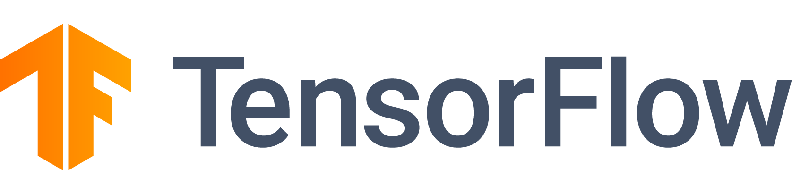
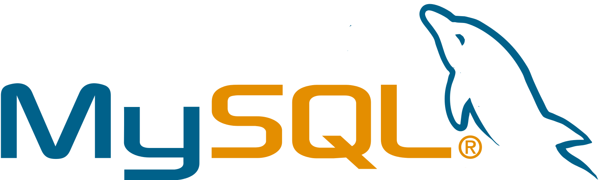

SmartRecruiting
Service web permettant de prédire les formations de l'UGA les plus adaptées face à une offre de stage
Projet académique (hiver 2019)
SmartRecruiting est un projet soutenu par Disrupt Campus. Le projet consiste à associer automatiquement des filières de formation de l'Université Grenoble Alpes à partir d'offres de stage. Le but étant de simplifier la connexion entre les 5 acteurs impliqués dans les recherches de stage :
- Les étudiants recherchant des stages ;
- Les gestionnaires de scolarité ;
- Les universités ;
- Les entreprises proposant des offres de stage.
Avec 2 de mes camarades, notre but sur ce projet a été de refaire la partie backend du site afin de proposer une architecture plus qualitative, plus évolutive et plus maintenable. Nous avions aussi pour responsabilité de réécrire le module d'apprentissage et de prédiction en utilisant le machine learning afin d'obtenir des modèles d'apprentissage plus performants.
- Github (backend) https://gricad-gitlab.univ-grenoble-alpes.fr/Projets-INFO4/18-19/21/backend
- Documentation (backend) https://smartrecruiting-back.readthedocs.io/en/latest/
- Rapport https://gricad-gitlab.univ-grenoble-alpes.fr/Projets-INFO4/18-19/21/docs/-/blob/master/report.md
Technologies
-

La partie backend du projet, chargée de gérer les données et de proposer un service de prédiction, a été réalisée avec Python3
-

Le service d'apprentissage et de prédiction a été développé avec Tensorflow, un écosystème permettant d'utiliser le machine learning. Keras, une librairie s'interfaçant avec Tensorflow, a été utilisé afin d'utiliser des modèles de deep learning : les CNN (réseau de neurones convolutifs)
-

Les données de l'application ont été stockées avec MySQL, un serveur de base de données SQL
-
L'API web du projet a été réalisée avec Flask
-

La qualité du code de l'application a été analysée avec SonarQube
Screenshots